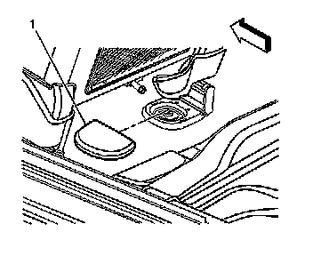
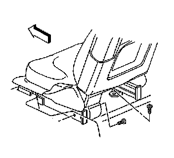
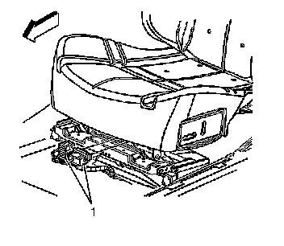
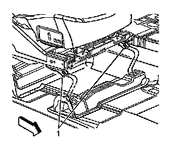

Bucket Seat Replacement
Bucket Seat Replacement
Removal Procedure
Caution: Refer to SIR Caution (SIR Caution) .
1. Disable the SIR System. Refer to SIR Disabling and Enabling (Service and Repair) .

2. Move the front seat forward in order to access the front seat track trim cover (1).
3. Remove the seat track trim cover (1) from the seat track.

4. Remove the seat track fasteners from the seat track.

5. Disconnect the seat electrical connectors (1).
6. With the aid of an assistant, remove the seat from the vehicle.
Installation Procedure
1. With the aid of an assistant, install the seat into the vehicle.

2. Insert the front tabs (1) on the seat track into the floor.
3. Connect the electrical connectors (1).
Notice: Refer to Fastener Notice (Fastener Notice) .
4. Install the seat track fasteners.
Tighten the seat track fasteners to 30 N.m (22 lb ft).
5. Install the seat track trim covers (1).
6. Enable the SIR System. Refer to SIR Disabling and Enabling (Service and Repair) .